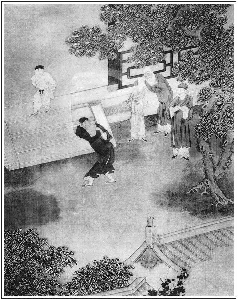

張回此回收拾惠蓮，令其風馳電卷而去也。夫費如許筆墨，花開豆爆出來，卻又令其風馳電卷而去，則不如勿寫之為愈也。不知有寫此一人意在此人者，則肯輕寫之，亦不肯便結之。蓋我本意所欲寫者在此，則一部書之終始即在此。此人出而書始有，此人死而書亦終矣，如西門、月娘、金、瓶、梅、敬濟等人是也。有寫此一人，本意不在此人者，如宋蕙蓮等是也。本意止謂要寫金蓮之惡，要寫金蓮之妒瓶兒，卻恐筆勢迫促，便間架不寬廠，文法不盡致，不能成此一部大書，故於此先寫一宋蕙蓮，為金蓮預彰其惡，小試其道，以為瓶兒前車也。然而蕙蓮不死，不足以見金蓮也。金蓮死之死，不在一聞來旺之信而即死，卻在雪娥上氣之後而死，是蕙蓮之死，金蓮死之，非蕙蓮之自死也。金蓮死之固為爭寵，而蕙蓮之死於金蓮，變是爭妍，殆爭之不勝，至再至三，而終不勝，故憤恨以死。故一云「含羞」，又云「受氣不過」，然則與來旺何與哉！
看其寫來旺中計，而蕙蓮云「只當中了人拖刀之計」，與瓶兒見官哥被驚之言一樣，不改一字。然而寫蕙蓮為瓶兒前車，為的確不易，非予強評也。
一路寫金蓮之惡，真令人髮指，而其對西門一番說話，卻入情入理，寫盡千古權奸會倆也。然唯西門有迷色之念，金蓮即婉轉以色中之，故迷而不悟。倘不心醉蕙蓮，而一旦忽令其殺一人，西門雖惡，必變色而不聽也。是知聽言又在其人。
「風裡言風裡語」六字，妙絕，奇絕。天下事何事不在風裡言語中哉？夫風何處不在，乃作惡者必欲袖裡藏風，其愚不知為何如也。
觀蕙蓮甘心另娶一人與來旺，自隨西門，而必不忍致之遠去。夫遠去且不甘，況肯毒死氣死之哉！雖其死總由妒寵不勝而死，而其本心卻比金蓮、瓶兒差勝一等，又作者反襯二人也。
蕙蓮本意無情西門，不過結識家主為叨貼計耳，宜乎不甘心來旺之去也。文字俱於人情深淺中一一討分曉，安得不妙。
詩曰：
與君形影分吳越，玉枕經年對離別。
登台北望煙雨深，回身哭向天邊月。
又：
夜深悶到戟門邊，卻繞行廊又獨眠。
閨中只是空相憶，魂歸漠漠魄歸泉。

話說西門慶聽了金蓮之言，又變了卦。張旁一番罪案。到次日，那來旺兒收拾行李伺候，到日中還不見動靜。只見西門慶出來，叫來旺兒到跟前說道：「我夜間想來，你才打杭州來家多少時兒，又教你往東京去，忒辛苦了，不如叫來保替你去罷。你且在家歇宿幾日，我到明日，家門首生意尋一個與你做罷。」自古物聽主裁，那來旺兒那裡敢說甚的，只得應諾下來。西門慶就把銀兩書信，交付與來保和吳主管，三月念八日起身往東京去了。張旁回來即是六月。不在話下。
這來旺兒回到房中，心中大怒，繡旁應前大喜。吃酒醉倒房中，口內胡說，怒起宋蕙蓮來，要殺西門慶。繡眉情急而亂，禍臨頭，人往往如此。被宋蕙蓮罵了他幾句：「你咬人的狗兒不露齒，是言不是語，牆有縫，壁有耳。吃了那黃湯，挺那兩覺。」打發他上床睡了。到次日，走到後邊，串玉簫房裡請出西門慶。兩個在廚房後牆底下僻靜處說話，玉簫在後門首替他觀風。婆娘甚是埋怨，說道：「你是個人？你原說教他去，怎麼轉了靶子，又教別人去？你乾淨是個『毬子心腸──滾上滾下』，繡旁說得切。『燈草拐棒兒──原拄不定把』。你到明日蓋個廟兒，立起個旗桿來，就是個謊神爺！我再不信你說話了。我那等和你說了一場，就沒些情分兒！」繡眉埋怨中帶戲謔，妙甚。西門慶笑道：「到不是此說。我不是也叫他去，恐怕他東京蔡太師府中不熟，所以教來保去了。留下他，家門首尋個買賣與他做罷！」婦人道：「你對我說，尋個甚麼買賣與他做？」西門慶道：「我教他搭個主管，在家門首開酒店。」婦人聽言滿心歡喜，走到屋裡一五一十對來旺兒說了，繡旁此時已明做矣。張旁來旺亦借此生財，無他意也。單等西門慶示下。
一日，西門慶在前廳坐下，著人叫來旺兒近前，桌上放下六包銀兩，說道：「孩兒！你一向杭州來家辛苦。教你往東京去，恐怕你蔡府中不十分熟，所以教來保去了。今日這六包銀子三百兩，你拿去搭上個主管，在家門首開酒店，月間尋些利息孝順我，也是好處。」那來旺連忙趴在地下磕頭，領了六包銀兩。回到房中，告與老婆說：「他倒拿買賣來窩盤我，張夾是喜語。今日與了我這三百兩銀子，教我搭主管，開酒店做買賣。」老婆道：「怪賊黑囚！你還嗔老婆說。一鍬就掘了井？也等慢慢來。如何今日也做上買賣了！你安分守己，休再吃了酒，口裡六說白道！」來旺兒叫老婆把銀兩收在箱中：「我在街上尋夥計去也！」於是走到街上尋主管。尋到天晚，主管也不成，又吃的大醉來家。老婆打發他睡了，就被玉簫走來，叫到後邊去了。張夾忽著一玉蕭來，寫得黑魃魃怕人。
來旺兒睡了一覺，約一更天氣，酒還未醒，正朦朦朧朧睡著，忽聽的窗外隱隱有人叫他道：「來旺哥！還不起來看看，你的媳婦子又被那沒廉恥的勾引到花園後邊，幹那營生去了。虧你倒睡的放心！」繡眉就心事上誘之，不得不應，妙局。張夾又黑魃魃寫得怕人。來旺兒猛可驚醒，睜開眼看看，不見老婆在房裡，只認是雪娥看見甚動靜來遞信與他，不覺怒從心上起，道：「我在面前就弄鬼兒！」忙跳起身來，開了房門，逕撲到花園中來。剛到廂房中角門首，不防黑影裡拋出一條凳子來，把來旺兒絆了一交，只見響亮一聲，一把刀子落地。左右閃過四五個小廝，大叫：「有賊！」一齊向前，把來旺兒一把捉住了。來旺兒道：「我是來旺兒，進來尋媳婦子，如何把我拿住了？」眾人不由分說，一步一棍，打到廳上。只見大廳上燈燭熒煌，張夾豈月點燭待有賊者乎？妙如畫。西門慶坐在上面，即叫：「拿上來！」來旺兒跪在地下，說道：「小的睡醒了，不見媳婦在房裡，進來尋他。如何把小的做賊拿？」那來興兒就把刀子放在面前，與西門慶看。張夾黑魃魃怕人。西門慶大怒，罵道：「眾生好度人難度，這廝真是個殺人賊！我倒見你杭州來家，叫你領三百兩銀子做買賣，如何夤夜進內來要殺我？不然拿這刀子做甚麼？」喝令左右：「與我押到他房中，取我那三百兩銀子來！」眾小廝隨即押到房中。蕙蓮正在後邊同玉簫說話，忽聞此信，忙跑到房裡。看見了，放聲大哭，說道：「你好好吃了酒睡罷，平白又來尋我做甚麼？只當暗中了人的拖刀之計。」張夾明說金蓮，然與瓶兒說官哥之語，又一字不更，遙遙對照。予雲寫瓶兒前車，金蓮小試，固知不謬。一面開箱子，取出六包銀子來，拿到廳上。西門慶燈下打開觀看，內中止有一包銀兩，餘者都是錫鉛錠子。西門慶大怒，因問：「如何抵換了！我的銀兩往那裡去了？趁早實說！」那來旺兒哭道：「爹抬舉小的做買賣，小的怎敢欺心抵換銀兩？」西門慶道：「你打下刀子，還要殺我。刀子現在，還要支吾甚麼？」因把來興兒叫來，面前跪下，執證說：「你從某日，沒曾在外對眾發言要殺爹，嗔爹不與你買賣做？」這來旺兒只是歎氣，張開口兒合不的。西門慶道：「既贓證刀杖明白，叫小廝與我拴鎖在門房內。明日寫狀子，送到提刑所去！」只見宋蕙蓮雲鬟撩亂，衣裙不整，走來廳上向西門慶跪下，說道：「爹，此是你幹的營生！張夾直說破。妙絕。他好好進來尋我，怎把他當賊拿了？你的六包銀子，我收著，原封兒不動，平白怎的抵換了？恁活埋人，也要天理。他為甚麼？你只因他甚麼？繡旁如何說得出。打與他一頓。張夾直講人情，妙。白描中化工手也。如今拉著送他那裡去？」西門慶見了他，回嗔作喜道：「媳婦兒，關你甚事？你起來。他無禮膽大不是一日，見藏著刀子要殺我，你不得知道。你自安心，沒你之事。」因令來安兒：「好攙扶你嫂子回房去，休要慌嚇他。」繡旁老面皮。那蕙蓮只顧跪著不起來，說：「爹好狠心！你不看僧面看佛面，我恁說著，你就不依依兒？繡眉人面前說軟媚情語，都不要臉矣。張夾後文必死之由。他雖故吃酒，並無此事。」纏得西門慶急了，教來安兒搊他起來，勸他回房去了。
到天明，西門慶寫了柬帖，叫來興兒做干證，揣著狀子，押著來旺兒往提刑院去，說某日酒醉，持刀夤夜殺害家主，又抵換銀兩等情。才待出門，只見吳月娘走到前廳，向西門慶再三將言勸解，說道：「奴才無禮，家中處分他便了。又要拉出去，驚官動府做甚麼？」西門慶聽言，圓睜二目，喝道：「你婦人家，不曉道理！奴才安心要殺我，你倒還教饒他罷！」繡眉月娘不看勢頭好歹就勸，所以討個沒趣。於是不聽月娘之言，喝令左右把來旺兒押送提刑院去了。月娘當下羞赧而退，回到後邊，向玉樓眾人說道：「如今這屋裡亂世為王，九尾狐狸精出世。不知聽信了甚麼人言語，平白把小廝弄出去了。你就賴他做賊，萬物也要個著實才好，拿紙棺材糊人，成何道理？恁沒道理昏君行貨！」宋蕙蓮跪在當面哭泣。月娘道：「孩兒你起來，不消哭。你漢子恆數問不的他死罪。賊強人，他吃了迷魂湯了，俺們說話不中聽，『老婆當軍──充數兒』罷了。」玉樓向蕙蓮道：「你爹正在個氣頭上，待後慢慢的俺每再勸他。你安心回房去罷。」按下這裡不提。
單表來旺兒押到提刑院，西門慶先差玳安送了一百石白米與夏提刑、賀千戶。二人受了禮物，然後坐廳。來興兒遞上呈狀，看了，已知來旺兒先因領銀做買賣，見財起意，抵換銀兩，恐家主查算，夤夜持刀突入後廳，謀殺家主等情。心中大怒，把來旺叫到當廳跪下。這來旺兒告道：「望天官爺察情！容小的說，小的便說；不容小的說，小的不敢說。」夏提刑道：「你這廝！見獲贓證明白，勿得推調，從實與我說來，免我動刑。」來旺兒悉把西門慶初時令某人將藍緞子，怎的調戲他媳婦兒宋氏成奸，如今故入此罪，要墊害圖霸妻子一節，訴說一遍。夏提刑大喝了一聲，令左右打嘴巴，說：「你這奴才欺心背主！你這媳婦也是你家主娶的，繡旁妙語。配與你為妻，又把資本與你做買賣，你不思報本，卻倚醉夤夜突入臥房，持刀殺害。滿天下人都像你這奴才，也不敢使人了。」來旺兒口還叫冤屈，被夏提刑叫過來興兒過來執證。那來旺兒有口說不得了。正是：
會施天上計，難免目前災。
夏提刑即令左右選大夾棍上來，把來旺兒夾了一夾，打了二十大棍，打的皮開肉綻，鮮血淋漓。吩咐獄卒，帶下去收監。來興兒、玳安兒來家，回覆了西門慶話。西門慶滿心歡喜，吩咐家中小廝：「鋪蓋、飯食，一些都不許與他送進去。但打了，休來家對你嫂子說，只說衙門中一下兒也沒打他，監幾日便放出來。」眾小廝應諾了。
這宋蕙蓮自從拿了來旺兒去，頭也不梳，臉也不洗，黃著臉兒，只是關閉房門哭泣，茶飯不吃。西門慶慌了，使玉簫並賁四娘子兒再三進房解勸他，說道：「你放心，爹因他吃酒狂言，監他幾日，耐他性兒，不久也放他出來。」蕙蓮不信，使小廝來安兒送飯進監去，回來問他，也是這般說：「哥見官，一下兒也不打。一兩日就來家，教嫂子在家安心。」這蕙蓮聽了此言，方才不哭了。每日淡掃娥眉，薄施脂粉，出來走跳。西門慶要便來回打房門首走，老婆在簷下叫道：「房裡無人，爹進來坐坐不是！」西門慶進入房裡，與老婆做一處說話。西門慶哄他說道：「我兒，你放心。我看你面上，寫了帖兒對官府說，也不曾打他一下兒。監他幾日，耐耐他性兒，還放他出來，還叫他做買賣。」婦人摟抱著西門慶脖子，說道：「我的親達達！你好歹看奴之面，繡眉詞愈親，則情愈疏矣，人多不悟。奈何他兩日，放他出來。隨你教他做買賣不教他做買賣也罷，這一出來，我教他把酒斷了，隨你去近到遠使他，他敢不去？再不你若嫌不自便，替他尋上個老婆，他也罷了。我常遠不是他的人了。」張夾總是為金蓮反襯。見金蓮之於武大不堪也。西門慶道：「我的心肝，你話是了。我明日買了對過喬家房，收拾三間房子與你住，搬你那裡去，咱兩個自在頑耍。」婦人道：「著來，親親！隨你張主便了。」說畢，兩個閉了門兒。
原來婦人夏月常不穿褲兒，只單吊著兩條裙子，張夾俏話。遇見西門慶在那裡，便掀開裙子就干。於是二人解佩露甄妃之玉，齊眉點漢署之香，雙鳧飛肩，雲雨一席。婦人將身帶的白銀條紗挑線香袋兒──裡邊裝著松柏兒並排草，挑著「嬌香美愛」四個字，把與西門慶。喜的心中要不的，恨不的與他誓共死生，向袖中即掏出一二兩銀子，與他買果子吃。再三安撫他：「不消憂慮，只怕憂慮壞了你。我明日寫帖子對夏大人說，就放他出來。」說了一回，西門慶恐有人來，連忙出去了。
這婦人得了西門慶此話，到後邊對眾丫鬟媳婦詞色之間未免輕露，繡旁婦人沒受用在此。孟玉樓早已知道，張夾又寫得怕人。轉來告潘金蓮說，他爹怎的早晚要放來旺兒出來，另替他娶一個；怎的要買對門喬家房子，把媳婦子吊到那裡去，與他三間房住，又買個丫頭伏侍他；與他編銀絲䯼髻，打頭面。一五一十說了一遍：「就和你我輩一般，甚麼張致！大姐姐也就不管管兒！」張夾又映月娘。潘金蓮不聽便罷，聽了時：
忿氣滿懷無處著，雙腮紅上更添紅。
說道：「真個由他，我就不信了！今日與你說的話，我若教賊奴才淫婦，與西門慶放了第七個老婆，我不喇嘴說，就把潘字倒過來！」張夾可殺。玉樓道：「漢子沒正條的，大姐姐又不管，咱每能走不能飛，到的那些兒？」繡旁酷肖玉樓口角。金蓮道：「你也忒不長俊，要這命做甚麼？活一百歲殺肉吃！他若不依我，拚著這命擯兌在他手裡也不差甚麼！」玉樓笑道：「我是小膽兒，不敢惹他，看你有本事和他纏。」
到晚，西門慶在花園中翡翠軒書房裡坐的，正要教陳敬濟來寫帖子，往夏提刑處說，要放來旺兒出來。被金蓮驀地走到跟前，搭伏著書桌兒，繡旁故作緩致。問：「你教陳姐夫寫甚麼帖子？」西門慶不能隱諱，因說道：「我想把來旺兒責打與他幾下，放他出來罷。」婦人止住小廝：「且不要叫陳姐夫來。」坐在旁邊，因說道：「你空耽著漢子的名兒，原來是個隨風倒舵、順水推船的行貨子！我那等對你說的話兒你不依，倒聽那賊奴才淫婦話兒。隨你怎的逐日沙糖拌蜜與他吃，他還只疼他的漢子。張夾一語刺人。依你如今把那奴才放出來，你也不好要他這老婆了，張夾又一語刺人。教他奴才好藉口，你放在家裡不葷不素，當做甚麼人兒看成？待要把他做你小老婆，奴才又見在；待要說道奴才老婆，你見把他逞的恁沒張致的，在人跟前上頭上臉有些樣兒！就算另替那奴才娶一個，著你要了他這老婆，往後倘忽你兩個坐在一答裡，那奴才或走來跟前回話，或做甚麼，見了有個不氣的？老婆見了他，站起來是，不站起來是？張夾可惜此言卻出之於金蓮之口。先不先，只這個就不雅相。繡眉設出許多木然之想，說得事事可慮，金蓮口嘴殊可畏。傳出去，休說六鄰親戚笑話，只家中大小，把你也不著在意裡。正是上樑不正下樑歪。你既要幹這營生，不如一狠二狠，把奴才結果了，繡旁活冤家。你就摟著他老婆也放心。」繡眉此等論頭，似從武大身上得來。張眉金蓮意在妒蕙蓮，今必欲死來旺，逆知來旺死，蕙蓮必不可留矣。張夾該死。幾句又把西門慶念翻轉了，反又寫帖子送與夏提刑，教夏提刑限三日提出來，一頓拷打，拷打的通不像模樣。提刑兩位官並上下觀察、緝捕、排軍，監獄中上下，都受了西門慶財物，只要重不要輕。
內中有一當案的孔目陰先生，名喚陰騭，乃山西孝義縣人，極是個仁慈正直之士。因見西門慶要陷害此人，圖謀他妻子，再三不肯做文書送問，與提刑官抵面相講。兩位提刑官以此掣肘難行，延挨了幾日，人情兩盡，只把他當廳責了四十，論個遞解原籍徐州為民。當查原贓，花費十七兩，鉛錫五包，責令西門慶家人來興兒領回。差人寫個帖子，回覆了西門慶，隨教即日押發起身。這裡提刑官當廳押了一道公文，差兩個公人把來旺兒取出來，已是打的稀爛，釘了扭，上了封皮，限即日起程，逕往徐州管下交割。
可憐這來旺兒，在監中監了半月光景，沒錢使用，弄的身體狼狽，衣服藍褸，沒處投奔。哀告兩個公人說：「兩位哥在上，我打了一場屈官司，身上分文沒有，要湊些腳步錢與二位，望你可憐見，押我到我家主處，有我的媳婦兒並衣服箱籠，討出來變賣了，張夾呆甚。知謝二位，並路途盤費，也討得一步松寬。」那兩個公人道：「你好不知道理！你家主既擺佈了一場，他又肯發出媳婦並箱籠與你？繡眉畢竟公人有見識。你還有甚親故，俺們看陰師父面上，瞞上不瞞下，領你到那裡，胡亂討些錢米，夠你路上盤費便了。誰指望你甚腳步錢兒！」來旺道：「二位哥哥，你只可憐引我先到我家主門首，我央浼兩三位親鄰，替我美言討討兒，無多有少。」兩個公人道：「也罷，我們就押你去。」這來旺兒先到應伯爵門首，伯爵推不在家。繡旁活賊。又央了左鄰賈仁清、伊勉慈二人來西門慶家，替來旺兒說討媳婦箱籠。西門慶也不出來，使出五六個小廝，一頓棍打出來，不許在門首纏擾。把賈、伊二人羞的要不的。他媳婦兒宋蕙蓮，在屋裡瞞的鐵桶相似，並不知一字。西門慶吩咐：「那個小廝走漏消息，決打二十板！」兩個公人又同到他丈人──賣棺材的宋仁家，來旺兒如此這般對宋仁哭訴其事，打發了他一兩銀子，與兩個公人一吊銅錢、一斗米，路上盤纏。哭哭啼啼，從四月初旬離了清河縣，往徐州大道而來。正是：
若得苟全癡性命，也甘飢餓過平生。
不說來旺兒遞解徐州去了。且說宋蕙蓮在家，每日只盼他出來。小廝一般的替他送飯，到外邊，眾人都吃了。轉回來蕙蓮問著他，只說：「哥吃了，監中無事。若不是也放出來了，連日提刑老爺沒來衙門中問事，也只在一二日來家。」西門慶又哄他說：「我差人說了，不久即出。」婦人以為信實。一日風裡言風裡語，張夾六字奇絕。聞得人說，來旺兒押出來，在門首討衣箱，不知怎的去了。這婦人幾次問眾小廝，都不說。忽見鉞安兒跟了西門慶馬來家，叫住問他：「你旺哥在監中好麼？幾時出來？」鉞安道：「嫂子，我告你知了罷，俺哥這早晚到流沙河了。」蕙蓮問其故，這鉞安千不合萬不合，如此這般：「打了四十板，遞解原籍徐州家去了。只放你心裡，休題我告你說。」這婦人不聽萬事皆休，聽了此言，關閉了房間，放聲大哭道：「我的人樂！你在他家干壞了甚麼事來？被人紙棺材暗算計了你！你做奴才一場，好衣服沒曾掙下一件在屋裡。今日只當把你遠離他鄉，弄的去了，坑得奴好苦也！你在路上死活未知。我就如合在缸底下一般，怎的曉得？」繡眉蕙蓮既為蔣聰報仇，又欲為來旺死節，雖淫，過金蓮、瓶兒遠矣。哭了一回，取一條長手巾拴在臥房門樞上，懸樑自縊。不想來昭妻一丈青，住房正與他相連，從後來聽見他屋裡哭了一回，不見動靜，半日只聽喘息之聲。扣房門叫他不應，慌了手腳，教小廝平安兒撬開窗戶進去。見婦人穿著隨身衣服，在門樞上正吊得好。一面解救下來，並了房門，取薑湯撅灌。須臾，嚷的後邊知道。吳月娘率領李嬌兒、孟玉樓、西門大姐、李瓶兒、玉簫、小玉張眉獨少金蓮，妙絕。都來看視，賁四娘子兒也來瞧。一丈青搊扶他坐在地下，只顧哽咽，白哭不出聲來。月娘叫著他，只是低著頭，口吐涎痰，不答應。月娘便道：「原來是個傻孩子！你有話只顧說便好，如何尋起這條路起來！」又令玉簫扶著他，親叫道：「蕙蓮孩兒，你有甚麼心事，越發老實叫上幾聲，不妨事。」繡旁動人苦衷。問了半日，那婦人哽咽了一回，大放聲排手拍掌哭起來。月娘叫玉簫扶他上炕，他不肯上炕。月娘眾人勸了半日，回後邊去了。止有賁四嫂同玉簫相伴在屋裡。
只見西門慶掀簾子進來，看見他坐在冷地下哭泣，令玉簫：「你搊他炕上去罷。」玉簫道：「剛才娘教他上去，他不肯去。」西門慶道：「好強孩子，冷地下冰著你。你有話對我說，如何這等拙智！」蕙蓮把頭搖著說道：「爹，你好人兒，你瞞著我幹的好勾當兒！還說甚麼孩子不孩子！你原來就是個弄人的劊子手，把人活埋慣了，害死人還看出殯的！繡眉半是想來旺，半是恨西門慶不聽己言，故執念不回，並作態以要寵也。你成日間只哄著我，今日也說放出來，明日也說放出來。只當端的好出來。你如遞解他，也和我說聲兒，張夾恨在此。暗暗不通風，就解發遠遠的去了。你也要合憑個天理！你就信著人幹下這等絕戶計，張夾恨又在此。把圈套兒做的成成的，你還瞞著我。你就打發，兩個人都打發了，如何留下我做甚麼？」繡旁語太無情。西門慶笑道：「孩兒，不關你事。那廝壞了事，所以打發他。你安心，我自有處。」因令玉簫：「你和賁四娘子相伴他一夜兒，我使小廝送酒來你每吃。」說畢，往外去了。賁四嫂良久扶他上炕坐的，和玉簫將話兒勸解他。
西門慶到前邊鋪子裡，問傅夥計支了一弔錢，買了一錢酥燒，拿盒子盛了，又是一瓶酒，使來安兒送到蕙蓮屋裡，說道：「爹使我送這個與嫂子吃。」蕙蓮看見，一頭罵：「賊囚根子！趁早與我拿了去，省的我摔一地。」繡眉此時送此物來，自惹人氣。來安兒道：「嫂子收了罷，我拿回去，爹又要打我。」便就放在桌子上。蕙蓮跳下來，把酒拿起來，才待趕著摔了去，被一丈青攔住了。那賁四嫂看著一丈青咬指頭兒。張夾白描。正相伴他坐的，只見賁四嫂家長兒走來，叫他媽道：「爹門外頭來家，要吃飯。」賁四嫂和一丈青走出來。到一丈青門首，只見西門大姐在那裡，和來保兒媳婦惠祥說話。張夾又映前文。因問賁四嫂那裡去，賁四嫂道：「俺家的門外頭來了，要飯吃。我到家瞧瞧就來。我只說來看看，吃他大爹再三央，陪伴他坐坐兒，誰知倒把我掛住了。」惠祥道：「剛才爹在屋裡，他說甚麼來？」賁四嫂只顧笑，說道：「看不出他旺官娘子，原來也是個辣菜根子，繡旁借旁人口襯出。和他大爹白搽白折的平上。誰家媳婦兒有這個道理！」惠祥道：「這個媳婦兒比別的媳婦兒不同，從公公身上拉下來的媳婦兒，繡旁妙語。這一家大小誰如他？」說畢惠祥去了。一丈青道：「四嫂，你到家快來。」賁四嫂道：「甚麼話，我若不來，惹他大爹就怪死了。」張夾又自己留身份。
卻說西門慶白日教賁四嫂和一丈青陪他坐，晚夕教玉簫伴他睡，慢慢將言詞勸他，說道：「宋大姐，你是個聰明的，趁恁妙齡之時，一朵花初開，主子愛你，也是緣法相投。你如今將上不足，比下有餘，守著主子，強如守著奴才。他已是去了，你恁煩惱不打緊，一時哭的有好歹，卻不虧負了你的性命？常言道：做一日和尚撞一日鐘，往後貞節輪不到你身上了。」繡眉說得花花哄哄，雖鐵人亦動。古今名理，不知被此等言語害了多少。那蕙蓮聽了，只是哭泣，每日粥飯也不吃。繡眉雖非貞節，然能於死生貴賤之際，感戀不忘其情，亦自可悲。玉簫回了西門慶話。西門慶又令潘金蓮親來對他說，也不依。金蓮惱了，向西門慶道：「賊淫婦，他一心只想他漢子，千也說一夜夫妻百夜恩，萬也說相隨百步，也有個徘徊意，這等貞節的婦人，卻拿甚麼拴的住他心？」張夾豈不自愧？西門慶笑道：「你休聽他摭說，他若早有貞節之心，當初只守著廚子蔣聰，不嫁來旺兒了。」繡眉如此語使金蓮聞之應自愧，故宜枘鑿也。嫁來旺為報蔣聰仇也。今來旺之仇誰報？雖然蔣聰之仇由來旺而報，來旺無西門則亦不能報。然則來旺之仇死之可也，不死之亦可也。張夾蓋雲當日不依我了。一面坐在前廳上，把眾小廝都叫到跟前審問：「來旺兒遞解去時，是誰對他說來？趁早舉出來，我也一下不打他。不然，我打聽出來，每人三十板，即與我離門離戶。」忽有畫童跪下，說道：「那日小的聽見鉞安跟了爹馬來家，在夾道內，嫂子問他，他走了口對嫂子說。」西門慶聽了大怒，一片聲使人尋鉞安兒。
這鉞安早知消息，一直躲到潘金蓮房裡去。金蓮正洗臉，小廝走到屋裡，跪著哭道：「五娘救小的則個！」金蓮罵道：「賊囚！猛可走來，嚇我一跳！你又不知干下甚麼事！」鉞安道：「爹因為小的告嫂子說了旺哥去了，要打我。娘好歹勸勸爹。若出去，爹在氣頭裡，小的就是死罷了！」金蓮道：「怪囚根子，諕的鬼也似的！我說甚麼勾當來，恁驚天動地的？原來為那奴才淫婦。」吩咐：「你在我這屋裡，不要出去。」於是藏在門背後。西門慶見叫不將鉞安去，在前廳暴叫如雷。一連使了兩替小廝來金蓮房裡尋，都被金蓮罵的去了。落後，西門慶一陣風自家走來，手裡拿著馬鞭子，問：「奴才在那裡？」金蓮不理他，被西門慶繞屋尋遍，從門背後採出鉞安來要打。吃金蓮向前，把馬鞭子奪了，掠在床頂上。繡旁金蓮頗有膽氣。說道：「沒廉恥的貨兒，你臉做主了！那奴才淫婦想他漢子上吊，羞急拿小廝來煞氣，關小廝甚事！」那西門慶氣的睜睜的。繡眉此等情節不堪說破，說破則西門慶自開口動手不得。金蓮叫小廝：「你往前頭幹你那營生去，不要理他。等他再打你，有我哩！」張眉前私僕時，西門慶如何威勢！金蓮如何懼怕！今卻使金蓮長志，西門失威。何也？西門自處非禮，故不能復振。修身而後齊家，蓋有以也。而敬濟後事，何莫非因此而放膽哉！那鉞安得手，一直往前去了。正是：
兩手劈開生死路，翻身跳出是非門。
這潘金蓮見西門慶留意在宋蕙蓮身上，乃心生一計。張夾罪案昭然。在後邊唆調孫雪娥，說來旺兒媳婦子怎的說你要了他漢子，備了他一篇是非，他爹惱了，才把他漢子打發了：「前日打了你那一頓，拘了你頭面衣服，都是他過嘴告說的。」這孫雪娥聽了個耳滿心滿。掉了雪娥口氣兒，張夾罪案昭然。走到前邊，向蕙蓮又是一樣話說，說孫雪娥怎的後邊罵你是蔡家使喝的奴才，積年轉主子養漢，不是你背養主子，你家漢子怎的離了他家門？說你眼淚留著些腳後跟。說的兩下都懷仇恨。
一日，也是合當有事。四月十八日，李嬌兒生日，院中李媽媽並李桂姐，都來與他做生日。吳月娘留他同眾堂客在後廳飲酒，西門慶往人家赴席不在家。這宋蕙蓮吃了飯兒，從早晨在後邊打了個幌兒，走到屋裡直睡到日西。由著後邊一替兩替使了丫鬟來叫，只是不出來。雪娥尋不著這個由頭兒，走來他房裡叫他，說道：「嫂子做了玉美人了，怎的這般難請？」張夾雪娥隨處惹嘲，宜乎有為娼之報。那蕙蓮也不理他，只顧面朝裡睡。這雪娥又道：「嫂子，你思想你家旺官兒哩。早思想好來！不得你他也不得死，還在西門慶家裡。」繡旁雪娥來得殊無文理，後之一死適足以償。張夾此語又不可出之雪娥口。這蕙蓮聽了他這一句話，打動潘金蓮說的那情由，翻身跳起來，望雪娥說道：「你沒的走來浪聲顙氣！他便因我弄出去了。你為甚麼來？打你一頓，攆的不容上前。得人不說出來，大家將就些便罷了，何必撐著頭兒來尋趁人！」張夾偏入金蓮套中。讀者於此悟行兵之道。這雪娥心中大怒，罵道：「好賊奴才，養漢淫婦！如何大膽罵我？」蕙蓮道：「我是奴才淫婦，你是奴才小婦！張夾一轉。我養漢養主子，強如你養奴才！繡旁罵得痛快。張夾一轉。你倒背地偷我漢子，你還來倒自家掀騰？」張夾又一轉。這幾句話，說的雪娥急了，宋蕙蓮不防，被他走向前，一個巴掌打在臉上，打的臉上通紅。說道：「你如何打我？」於是一頭撞將去，兩個就揪扭打在一處。慌的來昭妻一丈青走來勸解，把雪娥拉的後走，兩個還罵不絕口。吳月娘走來罵了兩句：「你每都沒些規矩兒！不管家裡有人沒人，都這等家反宅亂的！等你主子回來，看我對你主子說不說！」當下雪娥就往後邊去了。月娘見蕙蓮頭髮揪亂，便道：「還不快梳了頭，往後邊來哩！」蕙蓮一聲兒不答話。打發月娘後邊去了，走到房內，倒插了門，哭泣不止。哭到掌燈時分，眾人亂著，後邊堂客吃酒，可憐這婦人忍氣不過，繡眉四字春秋得妙，以見非為節也。張夾四字定案。不為來旺守節也。尋了兩條腳帶，拴在門楹上，自縊身死，亡年二十五歲。正是：
世間好物不堅牢，彩雲易散琉璃脆。
落後，月娘送李媽媽、桂姐出來，打蕙蓮門首過，房門關著，不見動靜，心中甚是疑影。打發李媽媽娘兒上轎去了，回來叫他門不開，都慌了手腳。還使小廝打窗戶內跳進去，割斷腳帶，解卸下來，撅救了半日，不知多咱時分，嗚呼哀哉死了。但見：
四肢冰冷，一氣燈殘。香魂眇眇，已赴望鄉台；星眼瞑瞑，屍猶橫地下。不知精爽逝何處，疑是行雲秋水中。
月娘見救不活，慌了。連忙使小廝來興兒，騎頭口往門外請西門慶來家。雪娥恐怕西門慶來家拔樹尋根，歸罪於己，在上房打旋磨兒跪著月娘，教休題出和他嚷鬧來。月娘見他嚇得那等腔兒，心中又下般不得，因說道：「此時你恁害怕，當初大家省言一句兒便了。」至晚，等的西門慶來家，只說蕙蓮因思想他漢子，哭了一日，趕後邊人亂，不知多咱尋了自盡。西門慶便道：「他恁個拙婦，原來沒福。」繡眉只深淡一語作結便了，蓋無情以系心也。作者一絲不亂。張夾到不拙。一面差家人遞了一紙狀子，報到縣主李知縣手裡，張旁後來審雪娥，亦在此處。只說本婦因本家請堂客吃酒，他管銀器傢伙，因失落一件銀鐘，恐家主查問見責，自縊身死。又送了知縣三十兩銀子。
知縣自恁要作分上，胡亂差了一員司吏帶領幾個仵作來看了。自買了一具棺材，討了一張紅票，賁四、來興兒同送到門外地藏寺。與了火家五錢銀子，多架些柴薪。才待發火燒燬，不想他老子賣棺材宋仁打聽得知，走來攔住，叫起屈來。說他女兒死的不明白，稱西門慶因倚強姦他：「我女貞節不從，威逼身死。我還要撫按告狀，誰敢燒化屍首！」那眾火家都亂走了，不敢燒。賁四、來興少不的把棺材停在寺裡來回話。正是：
青龍與白虎同行，吉凶事全然未保。
文回文禹門云：殺其夫，佔其妻，已成西門慶慣伎。自被武松放過，膽一日大似一日，手一日辣似一日。武大郎尚在暗中，花子虛仍是偷作，迨至來旺，居然大鑼大鼓，明日張膽，大明大白，於眾聞共睹之下，直做出來矣。
來旺本有自取之道。誣賊一層，顯系金蓮主謀，玉樓參贊，西門慶出場，吳月娘實不知情，方一開口，便受呵叱。西門慶前猶挖壁撥門之賊，今則明火執仗之盜。為之畫策者有人，為之助力者有人，為之旁敲側擊、內外夾攻者有人。雖有百月娘，亦奈之何哉！尚得曰：「大姐姐不管一管」，是果能管乎？果敢管乎？果容管乎？為管之者，助紂為虐，來旺兒入提刑院矣。
月娘被喝之後，其言曰：「亂世為王」，「九尾狐狸精出世」。明明作者不肯抹煞月娘，而使之出頭受辱，並出此言也。豈專指金蓮一人乎？玉樓固亦在其中矣。何以知之？玉樓勸蕙蓮曰：「你爹正在氣頭上，待會俺們再勸他。」厥後不但不聞玉樓之勸，要放來旺，金蓮尚不知，玉樓去報信，並激之曰：「看你本事」，含笑而道之。背後一而再，再而三：「大姐姐又不管」，分明指使金蓮出謀，而暗中參議。是金蓮陽暴，玉樓陰險，其病根總在於嫉妒。謂予不信，細味玉樓之言，「合你我一般，什麼張致。」金蓮之言：若與西門慶「作了第七個老婆，把潘字倒過來。」觀此金、玉二人之意，不但欲置來旺於死地，即慧蓮亦不令其能活也。
蕙蓮果死矣，本有所死之道。然人皆知死於雪娥之打，而不知實死於金蓮，更不知實死於玉樓。至於蕙蓮取死之道，已伏於玉樓叱之曰：「你這媳婦子，與你有什麼說處」，並看蕙蓮穿金蓮之鞋，一聲兒也不言語。又云：「嗔道賊臭肉，坐著見俺，待起不起的」，殺機早動於此矣。屢言「大姐姐不管」者，正唆金蓮之管之也。使月娘真管、能管，恐三娘亦未必能入此門矣。若玉樓者，吾甚畏之。